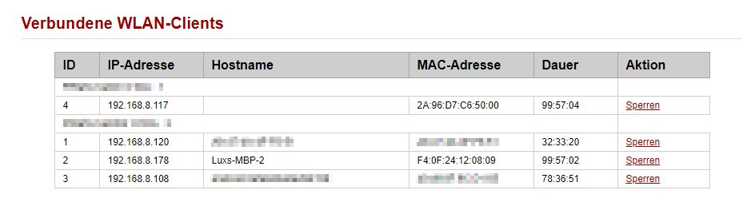
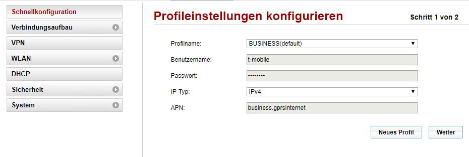
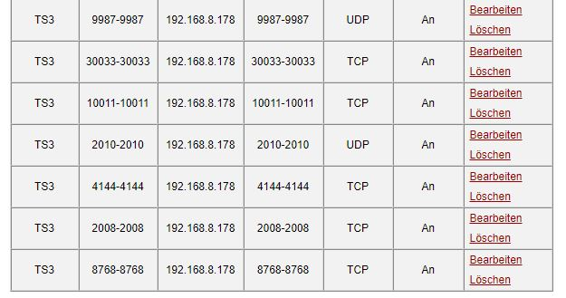

Die IP Adresse stimmt auch wirklich? Aufpassen, die ändert sich nämlich regelmäßig

Hast du auf dem Teil wo dein TS3 läuft eine Firewall? Ggf auch dort die Ports freigeben?
Lg
Setup:
T-Mobile HOMENET mit HUAWEI B525s Router
APN: business.gprsinternet
alle für TS3 notwendigen Ports an die lokale IP vom TS3-Host weitergeleitet bzw. korrekt eingetragen
Problem: der Rechner ist von "außen" trotzdem nicht erreichbar.
Kann es sein, dass die Weiterleitung nicht so klappt, wie sie sollte? Oder gibt es sonst noch irgendwelchen geheimen Einstellungen in dem doch recht seltsamen Management?
Es wäre wundervoll mal irgendwo eine Antwort von T-Mobile zu bekommen...
Beste Grüße
Die IP Adresse stimmt auch wirklich? Aufpassen, die ändert sich nämlich regelmäßig

Hast du auf dem Teil wo dein TS3 läuft eine Firewall? Ggf auch dort die Ports freigeben?
Lg
Sowohl lokale als auch öffentliche IP stimmen und die Firewall läßt die Verbindung mit Sicherheit durch, da es mit dem Router von der Konkurrenz den ich (noch) habe problemlos funktioniert

Alles klar

Kannst du mal einen Screenshot deiner Konfiguration hier reinstellen?
Danke;
Lg
bitteschön:
  
Ich bin mir nicht sicher ob z.B.: 9987-9987 funktionioert. Ich glaube du kannst hier keine "Range" angeben. Es sollte reichen, wenn du nur z.b.: 9987 eingibst. Was steht denn in der Beschreibung drüber beim Portforwarding?
Lg
Ja mir persönlich würde es auch ohne range reichen, aber das System erwartet 2 Werte von mir... ich habe da keine Andere Möglichkeit.
edit: und in dem Mini-Heftchen, das mal eine Beschreibung sein möchte wenn es groß ist, steht garnichts über Portweiterleitung. Deswegen bin ich hier... (bitte den sarkastischen Tonfall zu entschuldigen, aber ich doch schon sehr genervt)
Bearbeitet von knopfpush
Wie meinst du dass das System zwei Werte verlangt?
Wie im Screenshot zu sehen (und auch von jedem nachzuspielen nehme ich an)... ich MUSS zwei Werte (also eine range) angeben.
vor 15 Stunden schrieb knopf:
Alles klar, sorry - sieht dann bei dir doch ein wenig anders aus ...
Hast du einen Virenschutz/Firewall laufen? Vielleicht dort auch mal schauen ob die Ports freigegeben sind?
Lg
Nein, habe ich nicht bzw ist da alles korrekt eingestellt. Wie gesagt: wenn ich auf den anderen Anbieter umstecke funktioniert es wunderbar. Es muss also an irgendwelchen Einstellungen von T-Mobile liegen...
Das kann auch garnicht funktionieren. Da dein Router keine direkte öffentliche IP bekommt.
Wie beim Handy, hast du vorher eine 10.x.x.x IP.
Das bedeutet nicht dein Router macht das NAT, sondern T-Mobile schon vorher. Ich glaube auch nicht das du eine Fixe IP bekommen kannst ausser man ist Business-Kunde dann zahlt man für eine FIX-IP Monatlich etwas. Soweit ich es in Erinnerung habe.
Fixe IP muss nicht sein, das wäre okay, wenn ich des jedesmal durchgeben muss. Alles was ich will ist, dass das Ding den Port korrekt weiterleitet...
vor 14 Stunden schrieb baloo1986:Das kann auch garnicht funktionieren. Da dein Router keine direkte öffentliche IP bekommt.
Wie beim Handy, hast du vorher eine 10.x.x.x IP.
Das bedeutet nicht dein Router macht das NAT, sondern T-Mobile schon vorher. Ich glaube auch nicht das du eine Fixe IP bekommen kannst ausser man ist Business-Kunde dann zahlt man für eine FIX-IP Monatlich etwas. Soweit ich es in Erinnerung habe.
Du musst keine fixe IP haben, es reicht, wenn du auf den Business APN umstellst, dann hast du eine öffentlich IP.
vor 6 Stunden schrieb MarioM:Du musst keine fixe IP haben, es reicht, wenn du auf den Business APN umstellst, dann hast du eine öffentlich IP.
OK, das wusste ich nicht. Wieder was dazugelernt

Am 6/7/2018 um 18:47 schrieb baloo1986:OK, das wusste ich nicht. Wieder was dazugelernt
")
Öffentlich reicht schon mal damit du via DDNS zu Hause in dein Netzwerk kommst

{kind=link}